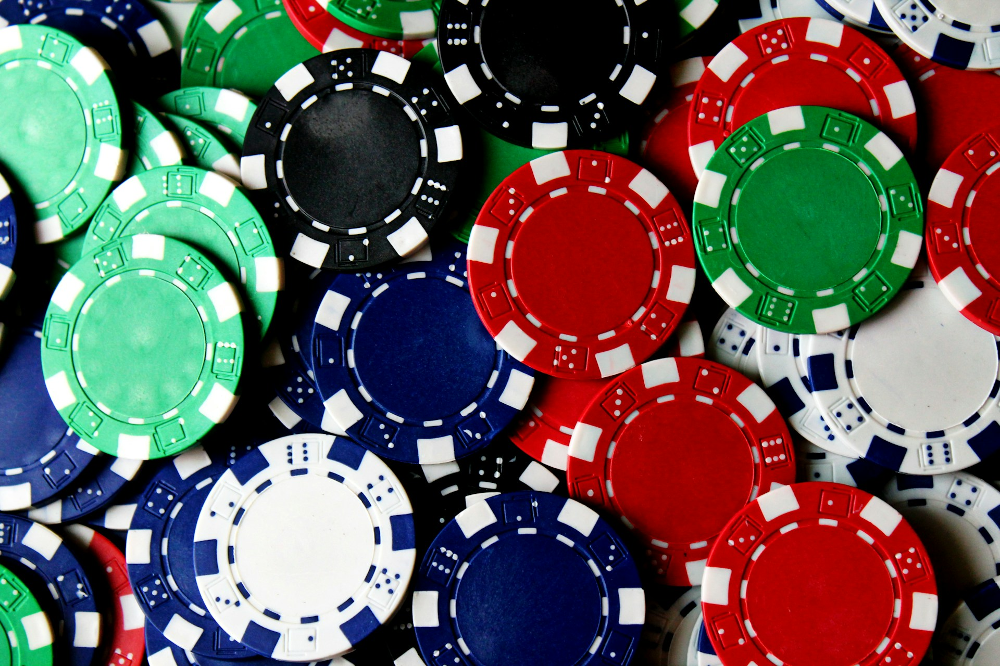

Introduction: Poker is a timeless card game that has captivated players for generations. Whether you're a beginner looking to learn the basics or a seasoned player seeking to refine your skills, this microsite is your comprehensive guide to the world of poker. Join us on a journey into the exciting realm of bluffs, bets, and strategic gameplay.
What is Poker? Poker is a family of card games that combines elements of strategy, skill, and psychology. Players compete to win chips or money by forming the best possible hand, or by convincing opponents to fold their hands.
Basic Poker Concepts:
History: Poker's origins date back to the early 19th century in the United States. It has since evolved into a global phenomenon with numerous variants, each with its own unique rules and strategies.
Benefits of Playing Poker:
Next Page: How to Play Texas Hold'em
